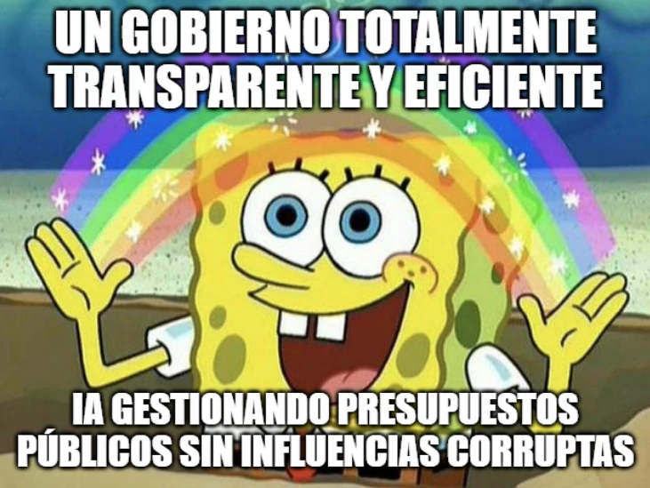

estrategIA #32 ·
Imaginar un gobierno transparente
El contexto
El arcoíris de Bob Esponja ilustra una aspiración: gestionar presupuestos públicos con eficiencia y sin corrupción. La imagen exagera esa promesa en un número sobre IA y gobierno; representa un ideal, no una propiedad automática de la tecnología.
Publicado en: estrategIA #32: El impacto de la inteligencia artificial en la Política y el Gobierno
Leer el texto de la imagen
UN GOBIERNO TOTALMENTE TRANSPARENTE Y EFICIENTE IA GESTIONANDO PRESUPUESTOS PÚBLICOS SIN INFLUENCIAS CORRUPTAS